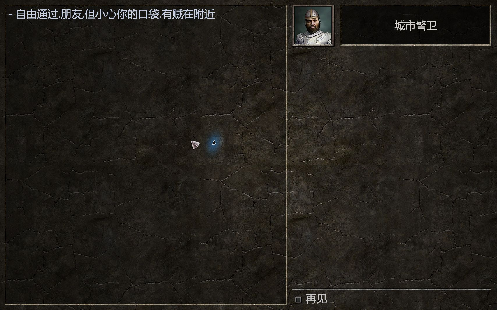
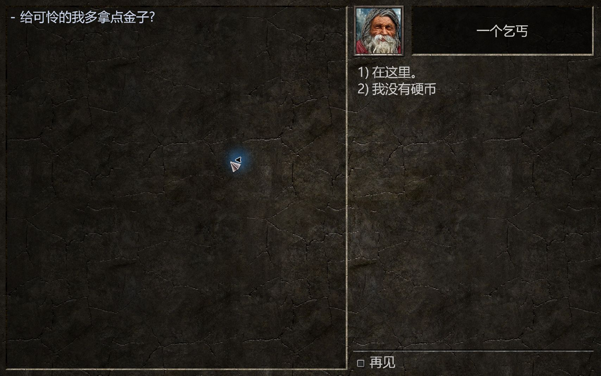

想一个人四处乱逛，
于是做起了 The Quest 汉化
我很喜欢剑与魔法的世界，也偏爱独狼式的自由探索：一个人带着装备出门，看到岔路就拐进去，想去哪就去哪。买下 Steam 版 The Quest 后，我想更舒服地读对白、看任务，于是开始折腾简体中文补丁。范围先覆盖主游戏和冰火之岛资料片；人名、国名、城市名和种族名保留英文，剧情先用机器初译，再重点校正属性、装备和任务术语。像把“选择种族”译成“选择比赛”，这样的笑话当然得先修掉。
真正费时间的是让中文显示出来。最初有缺字、空白，也有改完资源后启动失败的情况，需要反复恢复原版排查。字体终于能显示中文，长对白却又留在英文里：游戏先把正文排成多行并缓存，绘制时再翻译已经错过了完整句子。后来把对白提前换成中文，警卫与乞丐的正文才正常显示。翻译表里有中文，还得打开游戏看字形、换行和选项是否真的能用。
现在的 v0.3.5 仍在修改。Matras 警卫正文、乞丐正文及两个回应选项已经显示中文，措辞还有些机翻味；主线任务介绍、sorted 标签、地图教学及退出保存提示仍有英文遗漏。Bryl 首次开场本轮没有重新触发，仍待验证。下面两图来自此前的内部测试版；公开下载改用 Noto Sans SC 派生字体，字形和排版与截图会有差别。后面还要补齐遗漏，慢慢把对白改得更自然。




补丁下载
适用于 Windows Steam 版 The Quest 1.9.7，包含主游戏及冰火之岛的汉化改动。未安装冰火之岛也可使用，会跳过资料片补丁。剧情为机器初译，当前仍有英文遗漏。
下载汉化补丁 · v0.3.5ZIP · 1.80 MB · 差量安装包，保留原版备份，可一键恢复。
安装与恢复
- 下载并完整解压，关闭游戏；如已安装旧补丁，先用旧版恢复工具还原。
- 双击
Install.cmd，按提示选择游戏目录；安装成功后，从 Steam 启动游戏。 - 需要恢复英文时，关闭游戏并双击
Restore.cmd；原版备份会保留。
公开包仅包含汉化差量、Noto Sans SC 派生字体与显示适配组件，安装时读取自己的原版游戏文件。新字体已通过编码、字距和排版检查，尚未重新完成游戏内验证。详细使用说明和字体许可证随包附带。其他创意工坊世界与 PDF 手册尚未覆盖。